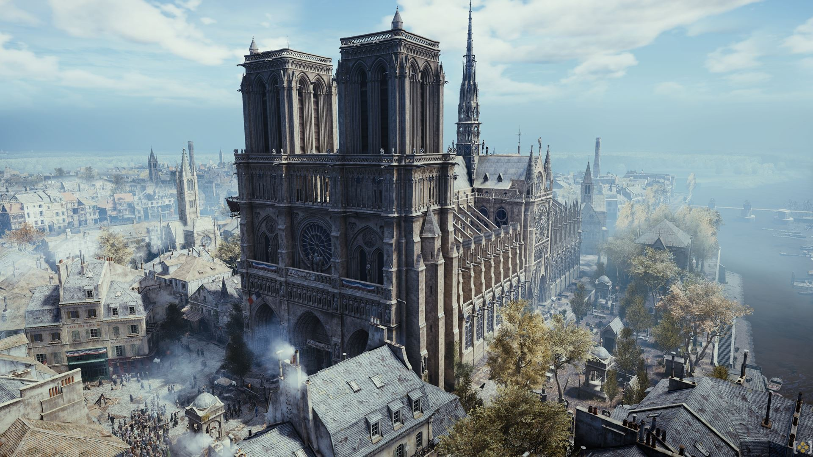
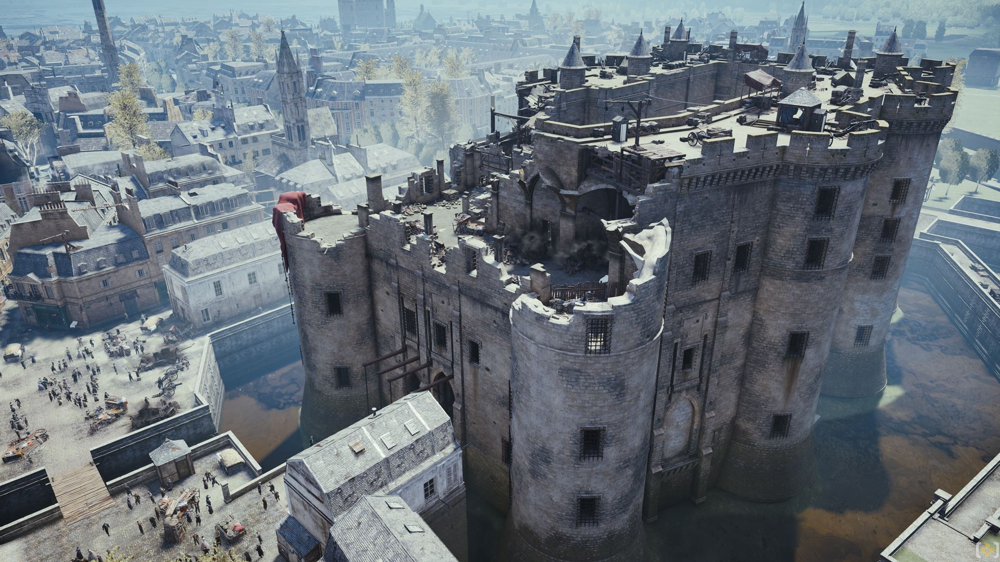
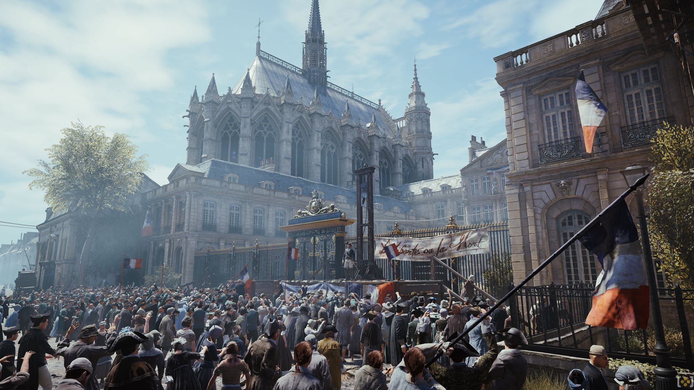
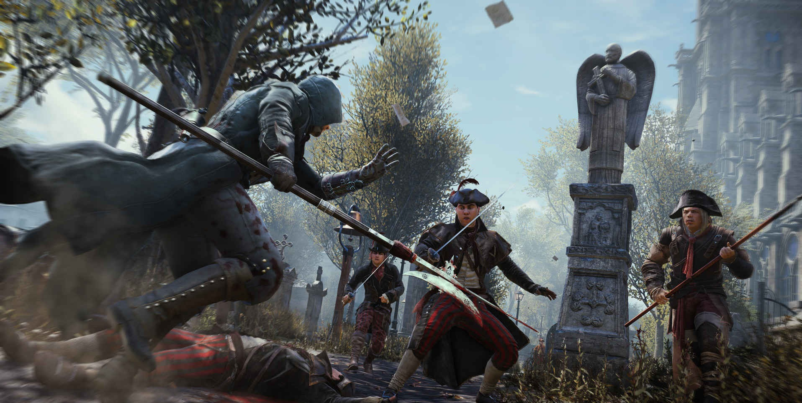
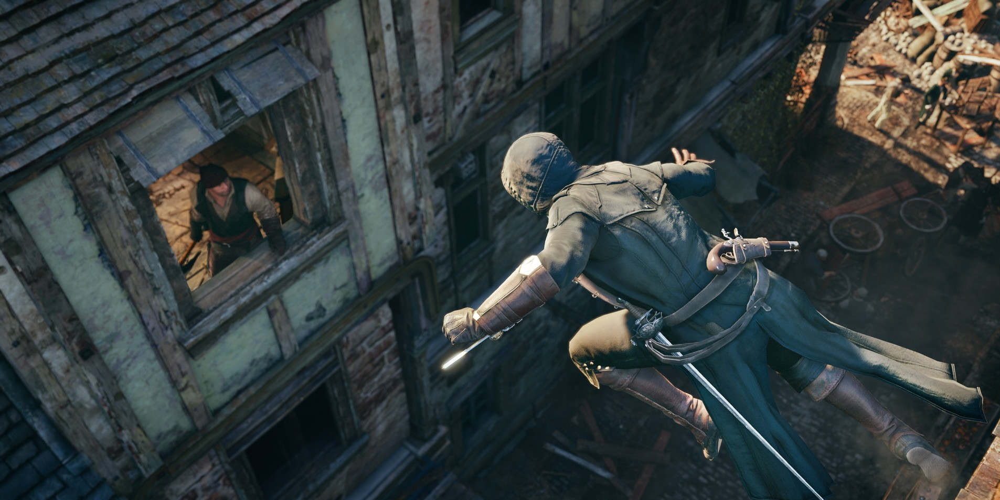
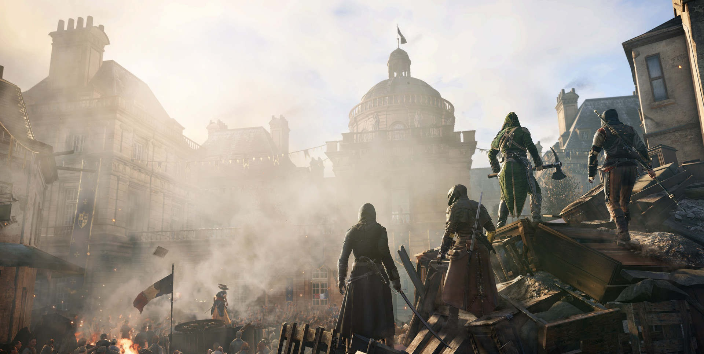

Assassin's Creed Unity
Assassin's Creed Unity is an upcoming historical action-adventure video game developed by Ubisoft Montreal and published by Ubisoft. It is set to be released in November and December 2014 for Microsoft Windows, PlayStation 4 and Xbox One. The game is the seventh major installment in the Assassin's Creed series, and the successor to 2013's Assassin's Creed IV: Black Flag with ties to 2014's Assassin's Creed Rogue. Set within Paris during the French Revolution, the single-player story follows Arno Dorian in his efforts to expose the true powers behind the Revolution.
The game retains the series' third-person open world exploration as well as introducing an improved melee combat and stealth system. Assassin's Creed Unity introduces cooperative multiplayer to the Assassin's Creed series, letting up to four players engage in narrative-driven missions and explore the open-world map.
The main character of the game is Arno Dorian (Dan Jeannotte), a native Frenchman who was born in Versailles to an Assassin father. After his father is killed, Arno is adopted, unaware that his new family holds a senior position within the Templar Order, with his new father figure the Templar Grandmaster. Arno blames himself when his adoptive father is murdered, and so sets out on a quest of redemption that brings him into the Brotherhood of Assassins, where he slowly rises through the ranks, much like Altaïr Ibn-La'Ahad and Ezio Auditore as seen in previous games. Arno's love interest is a Templar named Elise De LaSerre (Catherine Bérubé), the daughter of the Templar Grandmaster who adopted Arno, who also sets out to investigate more about her father's death and its role in a growing ideological change within the Templar Order that threatens its core values. Additional characters include Marquis de Sade (Alex Ivanovici), Napoleon Bonaparte (Brent Skagford) and Maximilien de Robespierre (Bruce Dinsmore)
Arno's story will be set in Paris on the eve of the French Revolution. The modern day setting will focus on the Assassins contacting the player and requesting their help to explore Arno in the past, as well as helping in the present. Co-operative multiplayer missions will follow the development of the Brotherhood of Assassins during the French Revolution.
Assassin's Creed: Unity began development in 2010 as Assassin's Creed: Brotherhood wrapped up development. Ubisoft's Montreal-based team, in conjunction with nine other studios from Toronto, Kiev, Singapore, Shanghai, Annecy, Montpellier, Bucharest, Quebec and Chengdu are working on the completion of the game.
The creative director is Alexandre Amancio, who also served in that capacity on 2011's Assassin's Creed: Revelations. He was offered the French Revolution game before taking the job of creative director on Revelations. After shipping that game, he was exhausted and took a job in advertising before returning to Ubisoft on Unity in June 2012.
The game uses a rebuilt Anvil game engine utilizing the Theatre, Zen and City Lights tools, which respectively improve animation, asset management and volumetric lighting. Quebec professor Laurent Turcot advised developers on the look of 18th century Paris, advising them to look at contemporary paintings and engravings in recreating the past. Nicolas-Jean-Baptiste Raguenet's paintings were emulated for the appearance of the city's water
Amancio explained the game's cast are using English accents because unlike previous games, where accents distinguished characters and reminded players where they are from, it is clear to the player that the characters in Unity are French so using those accents was deemed unnecessary.